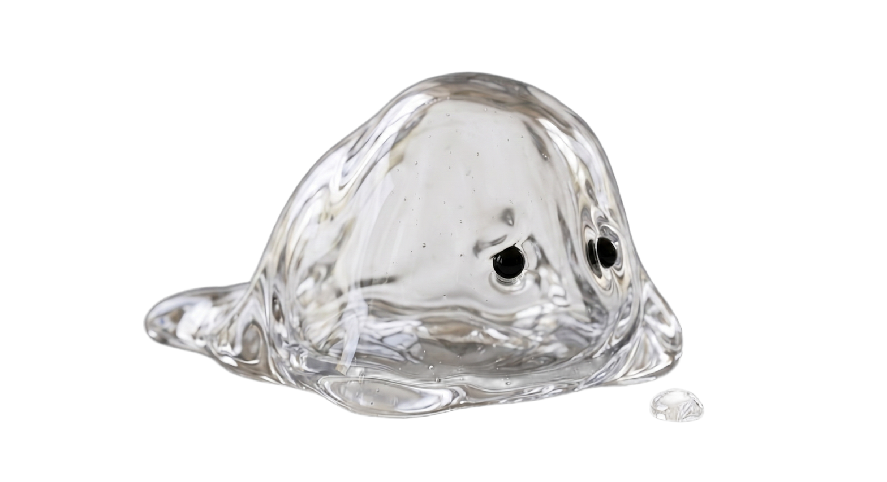

Last updated · May 2026
MyLoo ("we", "us", "our") operates the MyLoo mobile application — a personal digestive-health tracker. This Privacy Policy explains what data we collect, how we use it, and how we protect it. MyLoo handles sensitive health data and we treat it accordingly.
Photos are stored exclusively in the app sandbox at App/Documents/photos/ on your own device and are never uploaded to our servers. iOS and Android encrypt the app sandbox automatically with your device passcode. You can delete all photos at any time in Settings.
When you classify a photo, it is sent once to Anthropic (Claude AI Vision, US servers) for analysis. The AI extracts the Bristol type, color, and the five vision fields listed above. According to Anthropic's published policy, the photo is not retained and not used for AI training. We do not store the photo server-side either — only the extracted fields land in your account.
All entry data is encrypted on Supabase servers in the European Union (eu-central-1, Frankfurt). Row-Level-Security ensures only your account can access your entries. We use TLS/SSL in transit and AES-256 at rest.
Stool tracking is special-category personal data ("data concerning health") under GDPR Art. 9. We process it on the legal basis of your explicit consent, which you give during onboarding. You can withdraw consent any time by deleting your account in Settings.
We do not sell, rent, or share your personal data with advertisers, data brokers, or any third party not listed above.
Contact: support@myloo.app
Data is kept while your account is active. On account deletion, all personal data is irreversibly removed within 30 days — account, entries, photo path references, push tokens.
MyLoo is not intended for children under 16. We do not knowingly collect data from children under 16.
MyLoo is a tracking and educational tool, not a medical device. Tips, scores, and AI classifications are general gut-health guidance, not individual medical advice or diagnosis. For persistent symptoms or uncertainty, please consult a healthcare professional.
We may update this Privacy Policy. Significant changes will be communicated via in-app notification or email. The "Last updated" date above reflects the current version.
Questions about this Privacy Policy: support@myloo.app
MyLoo („wir", „uns", „unser") betreibt die mobile App MyLoo — einen persönlichen Verdauungs-Tracker. Diese Datenschutzerklärung erläutert, welche Daten wir erheben, wie wir sie verwenden und schützen. MyLoo verarbeitet sensible Gesundheitsdaten und behandelt sie entsprechend.
Fotos werden ausschliesslich im App-Sandbox unter App/Documents/photos/ auf deinem Gerät gespeichert und nie auf unsere Server hochgeladen. iOS und Android verschlüsseln den App-Sandbox automatisch mit deinem Geräte-Passcode. Du kannst alle Fotos jederzeit in den Einstellungen löschen.
Wenn du ein Foto klassifizierst, wird es einmalig an Anthropic (Claude AI Vision, US-Server) zur Analyse gesendet. Die KI extrahiert Bristol-Typ, Farbe und die fünf Vision-Felder. Laut Anthropic-Policy wird das Foto nicht gespeichert und nicht für KI-Training verwendet. Wir speichern das Foto ebenfalls nicht serverseitig — nur die extrahierten Felder landen in deinem Account.
Alle Eintrag-Daten liegen verschlüsselt auf Supabase-Servern in der Europäischen Union (eu-central-1, Frankfurt). Row-Level-Security stellt sicher, dass nur dein Account auf deine Einträge zugreifen kann. TLS/SSL für Übertragung, AES-256 im Ruhezustand.
Stuhl-Tracking sind sensible personenbezogene Daten („Gesundheitsdaten") nach DSGVO Art. 9. Verarbeitung erfolgt auf Basis deiner ausdrücklichen Einwilligung beim Onboarding. Du kannst die Einwilligung jederzeit durch Konto-Löschung in den Einstellungen widerrufen.
Wir verkaufen, vermieten oder teilen deine Daten nicht mit Werbetreibenden, Datenhändlern oder anderen nicht oben genannten Dritten.
Kontakt: support@myloo.app
Daten bleiben gespeichert, solange dein Konto aktiv ist. Bei Konto-Löschung werden alle persönlichen Daten innerhalb von 30 Tagen unwiderruflich entfernt — Konto, Einträge, Foto-Pfad-Referenzen, Push-Tokens.
MyLoo ist nicht für Kinder unter 16 Jahren bestimmt. Wir erheben wissentlich keine Daten von Kindern unter 16.
MyLoo ist ein Tracking- und Bildungstool, kein Medizinprodukt. Tipps, Scores und KI-Klassifikationen sind allgemeine Hinweise zur Darmgesundheit, keine individuelle medizinische Beratung oder Diagnose. Bei anhaltenden Symptomen oder Unsicherheit konsultiere bitte eine Ärztin oder einen Arzt.
Wir können diese Datenschutzerklärung aktualisieren. Wesentliche Änderungen kommunizieren wir via In-App-Notification oder E-Mail. Das „Stand"-Datum oben spiegelt die aktuelle Version.
Fragen zu dieser Datenschutzerklärung: support@myloo.app